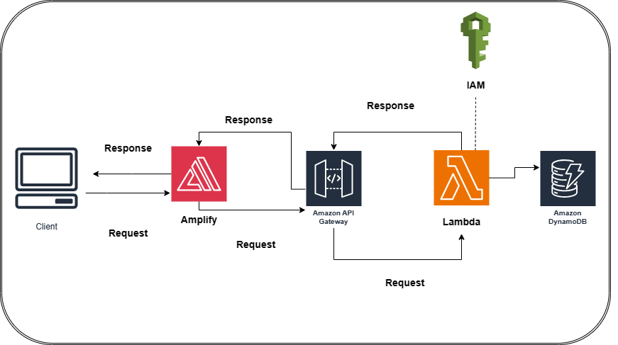
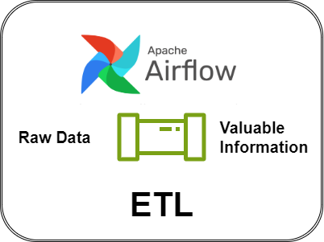

With customers having the option of monthly or premium subscriptions customer engagement is a priority. Popular recipes drive traffic to the rest of the websites up by 40% when displayed on the homepage. This model accurately predict recipe traffic 72% of the time. Elevate your culinary platform and anticipate user preferences for a flavor-filled success story!

The Power Calculator Web App is an end-to-end web application created and hosted on AWS. The application allows users to calculate the power of a base number raised to an exponent. It leverages various AWS services for different functionalities, providing a scalable and secure solution.

Experience seamless data transformation for S&P 500 companies with this ETL Pipeline powered by Apache Airflow. Automate and elevate the batch processing of vast datasets, ensuring precision and efficiency in every step. Unleash the potential of streamlined data workflows for unparalleled insights and informed decision-making.
Dive into the Nashville Housing Data Cleaning project, a meticulous endeavor to elevate the quality and structure of the Kaggle-acquired Nashville Housing dataset. Processed with precision in SQL Server Management Studio, this initiative unveils valuable insights into property sales in Nashville.

Embark on a journey of exploration with our COVID Data Exploration project. Delve into the depths of COVID-19 data sourced from Our World in Data. Our objective is to unveil valuable insights into the global impact of the pandemic, meticulously analyzed and presented through captivating Tableau visualizations.
Dive into the world of real-time insights with our Tweet Sentiment Analysis project. Powered by Apache Spark, this scalable application streams tweets, focusing on #covid19. Witness sentiment analysis in action and explore tweet locations through captivating visualizations in Kibana. Stay ahead with dynamic analytics in the age of social media.